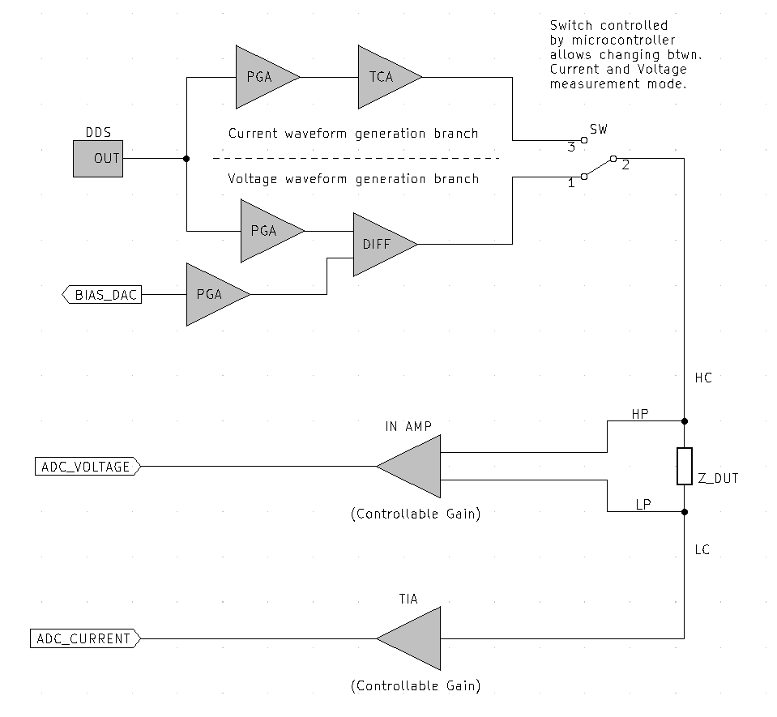
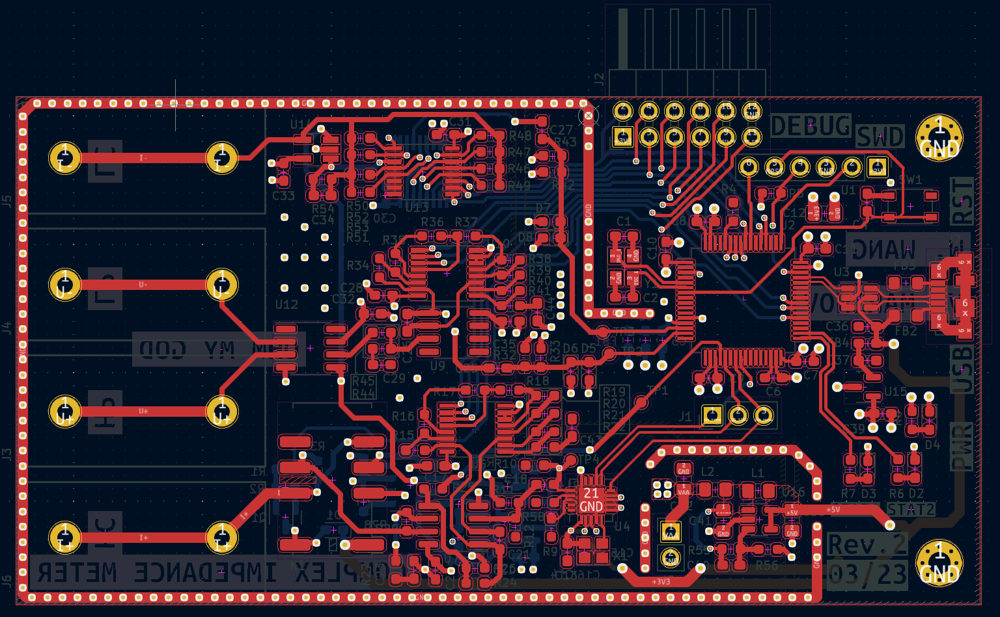
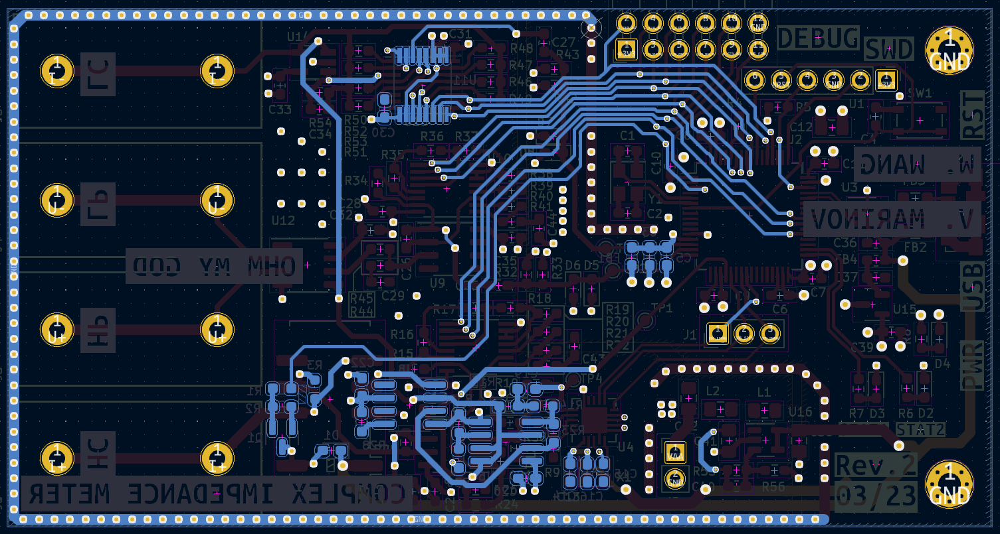
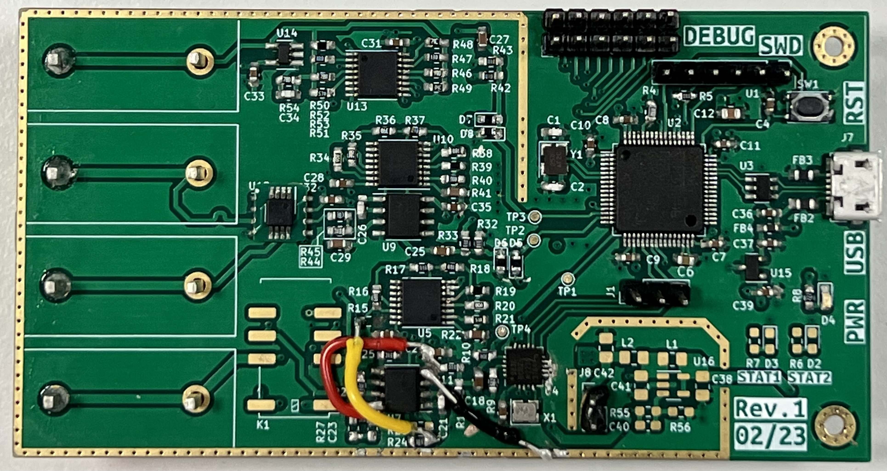
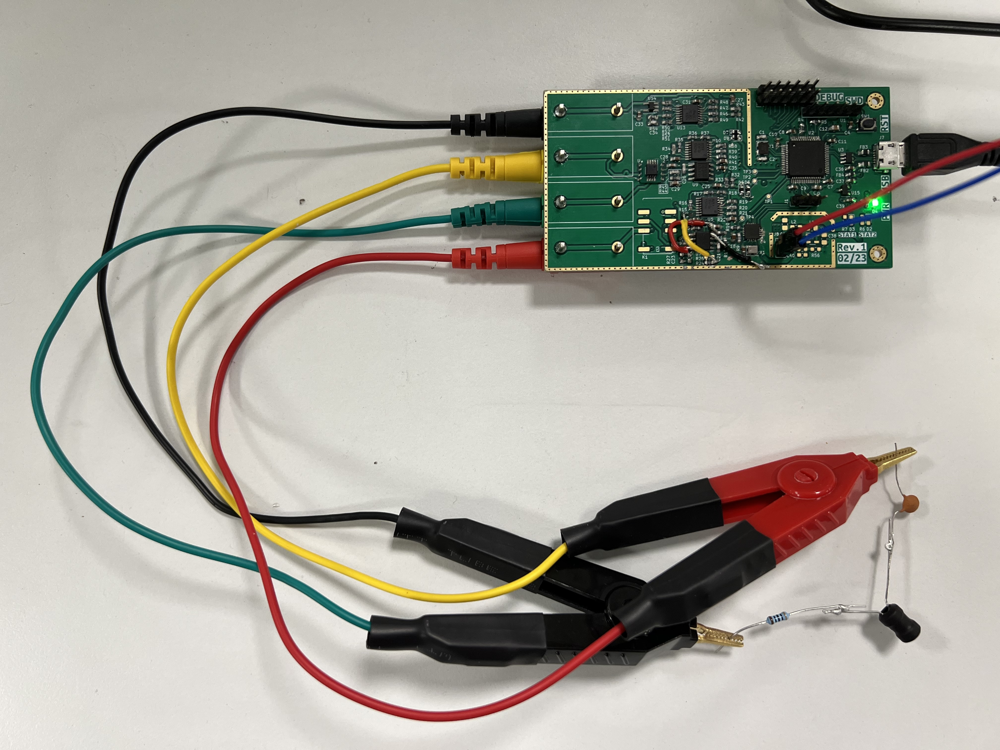
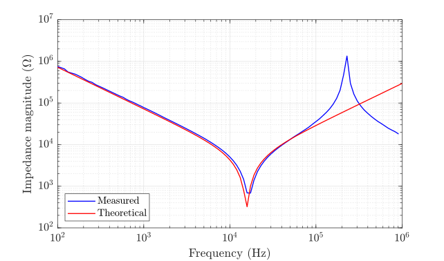
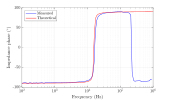

This project was the coursework of the Instrumentation module. The aim of the coursework is to implement a complex impedance meter on printed circuit board (PCB). The project was carried out in a group of 2 members.
The aim of a complex impedance meter is to measure the complex impedance of an electrical network. By definition, the complex impedance is given by the ratio of voltage and current phasors: \[Z=\frac{V}{I}\] This definition hints at the measurement method of applying a voltage/current on the device under test (DUT) and measuring the resulting current/voltage.
The architecture used in this project is an auto-balancing bridge configuration with a slight modification to allow for four-wire Kelvin connection. A diagram of the archiecture is shown below.
The the signal is applied at the high-current terminal, and the resulting current is measured by means of a transimpedance amplifier at the low-current terminal. The voltage is then measured between the high-potential and low-potential terminals using an instrumentation amplifier. Such a four-wire measurement method removes the effects of the connecting leads as much as possible.
Signal generation is done by means of a dedicated direct digital synthesis (DDS) chip. A variable DC bias is also introduced at the input. This would provide a way to measure the variation of components parameters under a DC voltage, such as the capacitance in the case of multi-layer ceramic capacitors (MLCCs).
Since a large range of measurable impedances is desired, switching the gains of the amplifiers is unavoidable. To minimise the unwanted effects of switching, such as switching transients and voltage drops, the switches were either placed on a low current path or arranged in a matrix, together with a parallel capacitor, as shown in the schematics below:
Both the schematic design and board layouts were done using KiCad. The second revision PCB layout is shown below:
 However, due to time limitations, most of the testing was completed on revision 1, which had, just like most first revision PCBs, a number of errors.
The microcontroller integrated on the PCB is the STM32F446RE. Most of the signal processing is done on the microcontroller. This includes the discrete Fourier transform, optimised using Goertzel's algorithm. Data from the microcontroller is then sent via USB to the computer. A simple graphical user interface was written in MATLAB, which gives users control over the input DC bias and displays impedance magnitude and phase against frequencies after a frequency sweep.
The complex impedance meter PCB was tested against a range of DUTs and gave good results in most cases. Perhaps the most interesting results was the measurement of a series RLC:
The measurement results showed an inductor self resonant frequency in the range of 200kHz-300kHz. This was confirmed by a measurement of the same DUT with a laboratory impedance meter.
 The OHM-MY-GOD complex impedance meter project was challenging in many aspects and involved countless hours of both hardware and software testing and debugging. It was also very rewarding, since it is my first time designing a PCB, and I have learnt a lot from my teammate who is quite experienced with PCB design.